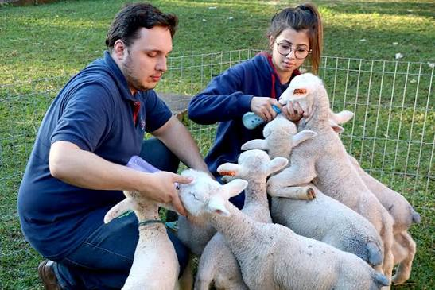
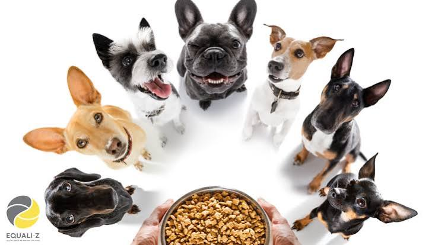
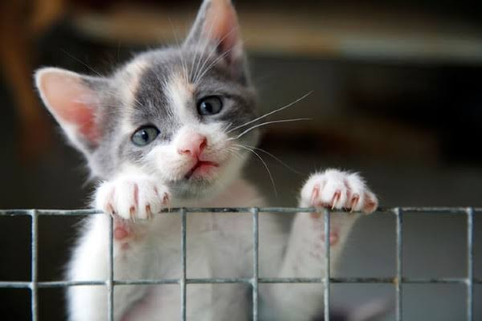
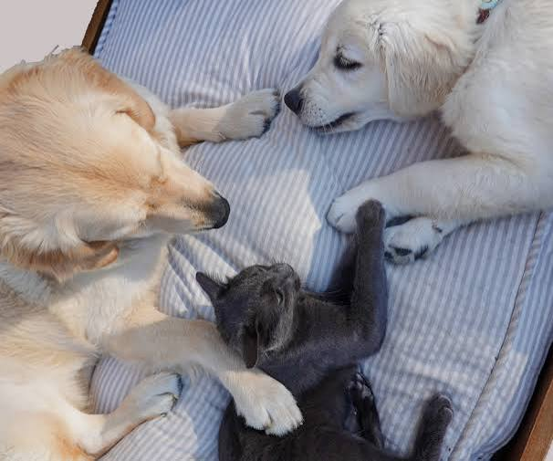

Nossos Projetos
🐕 Resgate de animais

Resgatamos animais abandonados ou encontrados em situação de vulnerabilidade nas ruas.
🏥 Cuidados veterinários

Buscamos oferecer atendimento veterinário, vacinação e tratamentos necessários aos animais resgatados.
🍲 Alimentação

Arrecadamos alimentos para garantir uma alimentação adequada aos animais acolhidos.
Doações são bem-vindas, fique a vontade para nos contatar.
🏡 Adoção responsável

Procuramos famílias responsáveis que possam oferecer um lar seguro e cheio de carinho.
🐾 Lar temporário

Pessoas voluntárias podem oferecer um espaço temporário para os animais enquanto aguardam uma adoção.
Caso tenha interesse em ajudar sendo um possivel lar temporário entre em contato conosco.